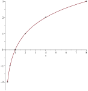
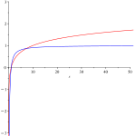
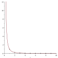
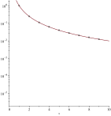

Read and use mathematical models in a technical document
Communicate results in mathematical notation and in language appropriate to the technical field
This section covers the following mathematical concepts.
Read and interpret models (critical thinking)
The previous two sections presented exponential models, and we answered some questions about applications using these models. In order to solve more problems involving exponential models we need the logarithm which is presented here. This section presents a definition of the logarithm as well as presenting how to graph them and one application. These latter will help us understand how it works.
Historically logarithms also have a connection to drunk pigeons and a Scotsman’s bones.
Subsection6.3.1Definition of Logarithm
The following definition is commonly used when we are using logarithms to solve equations.
Definition6.3.1.Logarithm.
\(\log_a(x)=y\) if and only if \(a^y=x\)
This definition is simply that the logarithm is the opposite of an exponential in the same sort of way that a square root is the opposite of a square.
Example6.3.2.
Each of the following is a conversion between exponential and logarithmic notation.
(a)
\(\log_2(8)=3\) is the same as \(2^3=8\text{.}\)
(b)
\(\log_5(1/25)=-2\) is the same as \(5^{-2}=1/25\text{.}\)
(c)
\(\log_{10}(\sqrt{10})=1/2\) is the same as \(10^{1/2}=\sqrt{10}\text{.}\)
Checkpoint6.3.3.
Checkpoint6.3.4.
Subsection6.3.2Graphing Logarithms
The purposes of this section are to become proficient with the defition through practice, and to understand the logarithm through practice and seeing its graph.
Example6.3.5.
We will graph \(y=\log_2(x)\text{.}\) As before we will begin by completing a table. Before we can fill out a table we need to figure out how we can produce points.
While we would normally pick values like \(x=3\) plug that in, producing \(y=\log_2(3)\text{,}\) and calculating, that will not work with logs. Indeed we will never calculate this particular point. Because it is easier to evaluate exponentials than logs, we will fill out a table of related exponentials then converting the points. The related exponential here is \(2^y = x\text{.}\)
\(y\)
\(x=2^y\)
\(0\)
\(2^0=\)
\(1\)
\(1\)
\(2^1=\)
\(2\)
\(2\)
\(2^2=\)
\(4\)
\(3\)
\(2^3=\)
\(8\)
\(4\)
\(2^4=\)
\(16\)
To produce points on the graph of this logarithm, we need only note that x and y reverse by our definition. The next table was constructed by swapping the x and y columns of the previous table.
\(x\)
\(y=\log_2(x)\)
\(1\)
\(0\)
\(2\)
\(1\)
\(4\)
\(2\)
\(8\)
\(3\)
\(16\)
\(4\)
Notice that as promised we do not have a point with \(x=3\text{.}\) This is because our method works only on values of \(x\) that are powers of 2.
To obtain points left of \((1,0)\) we will need to expand the table of points for the exponential. The previous table used positive y values. So we will select negative y values this time.
\(y\)
\(x=2^y\)
\(-1\)
\(2^{-1}=\)
\(1/2\)
\(-2\)
\(2^{-2}=\)
\(1/4\)
\(-3\)
\(2^{-3}=\)
\(1/8\)
\(-4\)
\(2^{-4}=\)
\(1/16\)
Again we produce points on the graph of the logarithm by swapping the x and y coordinates.
\(x\)
\(y=\log_2(x)\)
\(1/2\)
\(-1\)
\(1/4\)
\(-2\)
\(1/8\)
\(-3\)
\(1/16\)
\(-4\)
These are points to the left of the previous ones. However, there are none with negative x values. To understand why consider what a negative x value implies. Consider \(\log_2(-4) = y\) means \(2^y = -4\text{.}\) However, now matter how many times we multiply positive 2 it will never be negative. Therefore negative x values do not make sense in a logarithm.
The graph of \(y=\log_2(x)\) based on these points is below.

Checkpoint6.3.6.
Following the previous example construct a table for \(x=3^y\text{,}\) then use it to construct a table for \(y=\log_3(x)\text{.}\) Finally, graph this logarithm.
Next we consider the shape of the graph and what it tells us about logarithms. The first question is how high the logarithm curve grows. To explain this question consider Figure 6.3.7 below. As we look from left to right both curves are always increasing. Both curves increase by less as we go to the right. However, the lower (blue, dashed) curve levels off. That is it never increases above \(y=1\text{.}\) We want to know if the logarithm curve ever levels off.

Figure6.3.7.Graph of two always increasing curves
Example6.3.8.
Consider the example \(y=\log_2(x)\text{.}\) We know from the table above that it grows above \(y=1\text{.}\) Consider whether it grows above \(y=100\text{.}\) This would mean \(100 \lt 2^x\text{.}\) We know it is easier to calculate this logarithm for powers of 2 so instead we consider
By now we can see a pattern. For any y value we select there is a power of 2 that is greater (we can double forever). The logarithm evaluated at that power is bigger. Thus we know the logarithm increases forever. This is not dependent on the base 2. The same statement is true of any number (e.g., \(3^x\) and \(29^x\) increase forever as well).
In practice this means we should draw the graph of any logarithm with the curve pointing slightly up at the end.
We claimed above that the two graphs in Figure 6.3.7 increase more slowly as they continue to the right. The next example explains why this is true of the graph of a logarithm.
Example6.3.9.
Looking at the table of points for \(y=\log_2(x)\) in Example 6.3.5 we note that the curve increased by 1 in height from \(x=1\) to \(x=2\text{.}\) The next increase of 1 in height is at \(x=4\text{.}\) The next one is at \(x=8\text{.}\) This is a jump of 1 then 2 then 4. Each time the distance we have to travel to see an increase in height of 1 unit doubles. This means the rate of increase was \(1, 1/2, 1/4\text{.}\) This is a decreasing sequences, so while the logarithm increases forever, it does so increasingly slowly.
The final trait of the graph of a logarithm to consider is what happens as the graph goes to the left. We have already established that it is not defined for negative x values. However, the graph does not have a starting point (first point on the left). The next example illustrates the asymptotic nature of the left part of the graph.
Example6.3.10.
First consider the question, is there an x value such that \(0=2^x\text{?}\) We know that \(2^0=1\text{.}\) If we plug in negative values we obtain fractions, e.g., \(2^{-3} = 1/2^3 = 1/8\text{.}\) If we use a bigger negative number (e.g., -29) we end up with a smaller fraction (\(2^{-29}=1/2^{29}\)). No matter how far we go, 0 is never the result. Because of this \(\log_2(0)\) is not defined.
The calculations above also illustrated that we can get as close to zero as we want (just pick a big enough negative number). This means that just as the exponential curve has an asymptote to the left (approaches \(y=0\)), so the logarithm curve has an asymptote to the left, namely \(x=0\text{.}\)
Putting these traits together we realize the graph of any logarithm can be determined by the vertical asymptote and two points. This matches exponential graphs. From the left most point we draw asymptotically toward the vertical asymptote. To the right we draw with a slight increase.
Checkpoint6.3.11.
Subsection6.3.3Special Logarithms
Some logarithms occur sufficiently frequently in applications that they have their own notation.
Logarithms were developed to manage large numbers base 10. Thus we call base 10 logarithms: common logs. This is written without the base. For example \(\log(100)=2\) is the same as \(\log_{10}(100)=2\text{.}\)
In science and from mathematics we need another log called the natural logarithm. This is written as \(\ln(x)\) (for logarithm natural). Natural logarithms are paired with the base \(e\text{.}\) So \(\ln(5)=y\) is the same as \(e^y=5\text{.}\)\(e\) is a naturally occuring constant. You do not need to memorize an approximation (your calculator can handle that for you). For the curious \(e \approx 2.1718281828\text{.}\)
Checkpoint6.3.12.
Subsection6.3.4Logarithmic Scale
This section demonstrates how logarithms can be used to better analyze data. The technique is to modify how we graph, specifically how we label one axis.
Often the scales on the two axes are different. Consider the graph of \(y=\log_2(x)\) in Example 6.3.5 above. The x-axis is labeled 0 to 16 and the y-axis is labeled - 4 to 4. That means the x-axis, though it takes up the same length of area as the y-axis represents 16 units to the y-axis’ 8 units. We do this because many graphs would otherwise be too tall or too wide to fit.
What these graphs do require is that each tick mark represents the same number of units. For example on the graph of this log, every tick mark on the x-axis represents one unit (only half are labeled). On the y-axis every tick mark represents 1/2 unit (only half are labeled). Sometimes this requirement means it is hard to read a graph.
Consider the two graphs in Figure 6.3.13. Note they are the same data drawn with different scales. Write down coordinates for the first three points. Is it easier to be precise using the version on the left (normal scale) or the version on the right (log scale)?
(a)Normal Scale
(b)Log Scale
Figure6.3.13.Comparison of Scales
The graph on the left uses the normal (linear) scale. Specifically on both the x and y axes each tick represents the same difference (add 1 unit for each tick or 2 units for each label). The graph on the right is the same data using a logarithmic scale. The x axis is still linear (same as the left), but the y axes is labeled such that each tick is the same product (multiply by 10 for each label). Basing a scale on multiplying rather than adding makes this match exponentials. It is called a log scale because it looks like graphing \((x,\log(y))\text{.}\)
When is this scale useful? Any time data is growing by a multiple rather. This includes anything exponential. Recall that exponential growth means growing by a fixed percent. Signal strength in electronics is an example. For example consider how much of the signal is lost as it passes through a long cable. The resistance of the cable will cause a fixed percent to be lost rather than a fixed amount. A stronger signal will lose more (but still be stronger).
Consider an electronic amplifier: a device to increase intensity of sound by increasing the power of the signal. The mechanism used multiplies the incoming signal power by some factor. This enables your media devices to send out a very weak audio signal, but the speakers to receive a lot more power which they need to move enough air to be heard. Based on this design if more than one amplifier is connected in series, each one multiplies the signal strength from the previous one.
Studies of the human brain indicate that our brains interpret sensory data using a logarithmic scale. That is, we perceive things based on how much of a multiple they are of current condition rather than how much is added. For example, a 10 degree temperature change feels like more of change if the initial temperature is \(20^\circ\) F (when it is half of the current value) than if it is \(50^\circ\) F (now only one fifth of the current value).